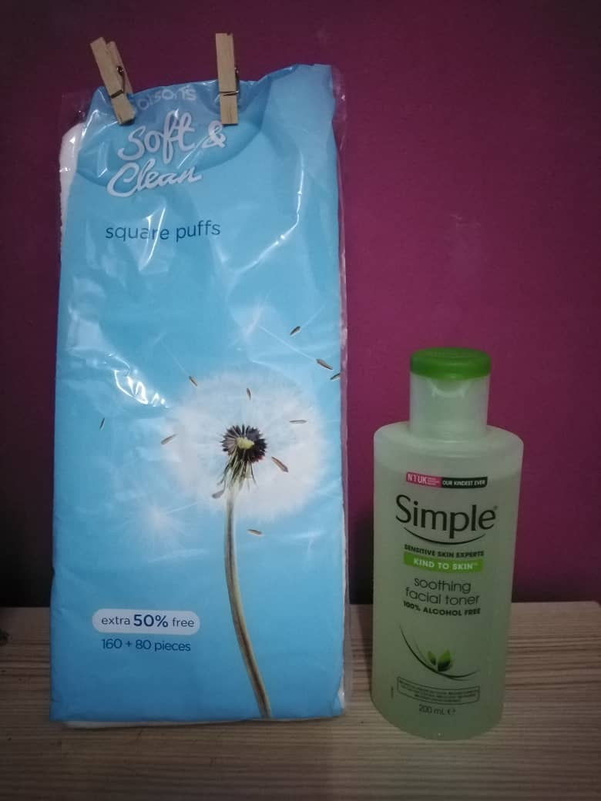
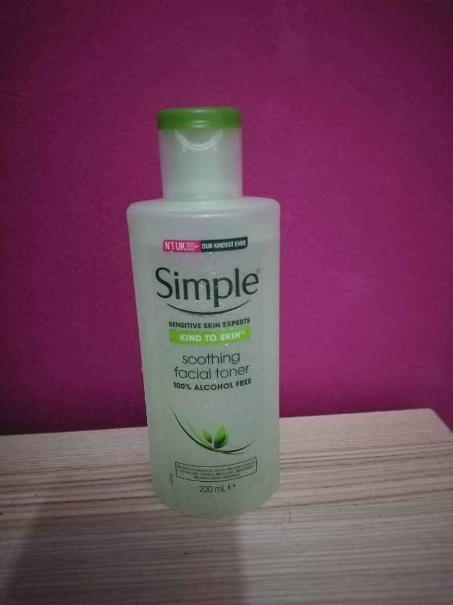

1. By using toner + cotton pad
The first way is the way that people often use which is just put some of the toner on the cotton pad and wipe it on your face. This way is to remove the dirt that are still on your face after
you have wash your face using your face cleanser.

2. By just using the toner
The second way is just by pour a little bit of that toner to your palm and rub our palm and press the toner that are on our palm to our skin. This is so that the toner will absorb faster on our
skin.
3. By using toner + cotton pad
Eventhough the third ways also using cotton pad, but the methods that will be used are different. Which is, put the toner on the cotton pad, and divide the cotton pad into two, because we want to
use it as a mask on our face, so we dont want the cotton pad too thick. After that, put the cotton pad to the part of your face that feels dry. You can put on your face for 15 minutes.